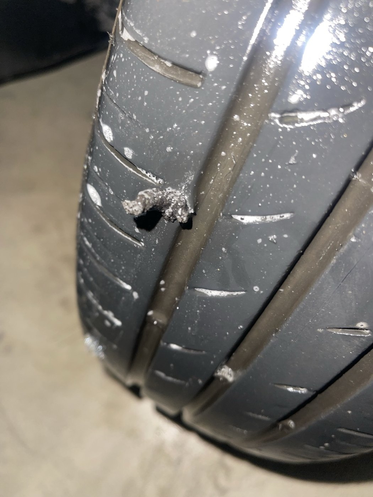
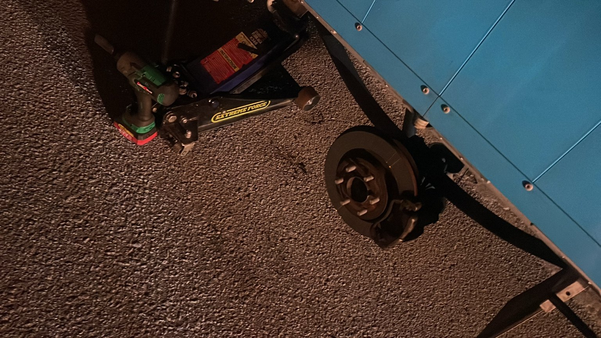
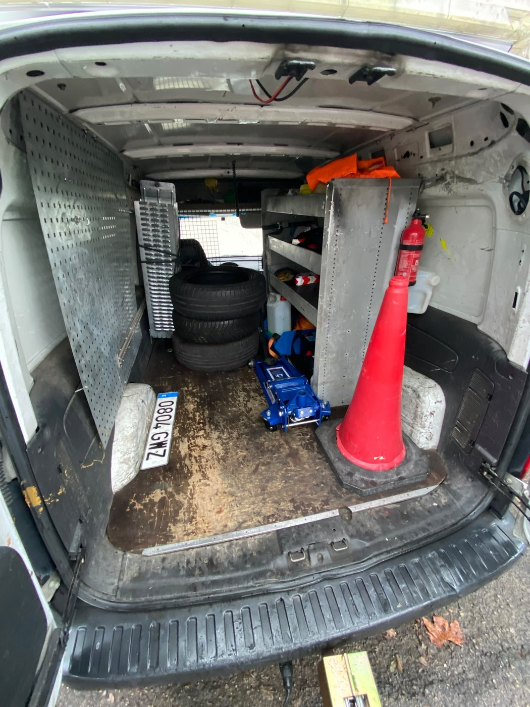
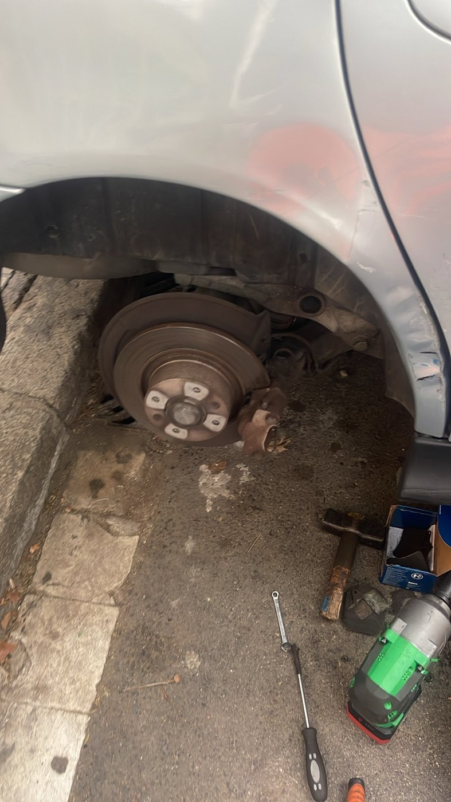

Pinchazos y neumáticos
Asistencia ante pinchazos y problemas de rueda. Valoramos la reparación o solución adecuada según el estado del neumático.
Asistencia in situAsistencia en carretera y reparaciones in situ para ayudarte ante averías, problemas de batería, arranque y pinchazos. Un equipo con medios propios y una red de colaboradores.
Atención práctica y profesional para incidencias habituales. Explícanos qué le ocurre a tu vehículo y valoramos la mejor solución.
Asistencia ante pinchazos y problemas de rueda. Valoramos la reparación o solución adecuada según el estado del neumático.
Asistencia in situ
Ayuda ante problemas de batería, falta de arranque y comprobaciones básicas en el lugar donde se encuentra el vehículo.
Asistencia en carretera
Pequeñas intervenciones y comprobaciones para resolver incidencias habituales, según diagnóstico y medios disponibles.
Reparaciones in situContamos con una estructura de vehículos propia y colaboradores externos que nos permiten ampliar los recursos disponibles para atender servicios en Barcelona y alrededores.
Los servicios se asignan según disponibilidad, características del vehículo y autorizaciones aplicables.


Trabajamos para ofrecer asistencia en carretera y soluciones in situ con un enfoque directo: escuchar la incidencia, valorar qué necesita el vehículo y coordinar los medios adecuados.

Una muestra de vehículos, equipamiento e intervenciones realizadas.





Prestamos servicios en Barcelona y área metropolitana. Indícanos tu ubicación para confirmar desplazamiento, disponibilidad y tipo de asistencia.
En Barcelona y alrededores. Confirma tu ubicación por teléfono o WhatsApp.
Atendemos consultas las 24 horas. La asignación del servicio depende de disponibilidad y tipo de incidencia.
Asistencia de batería y arranque, pinchazos y pequeñas intervenciones de mecánica ligera, según el caso.
El servicio de transporte/remolque que anunciamos directamente es exclusivamente para motocicletas. Consulta otras necesidades por teléfono.
Cuéntanos dónde estás y qué le ocurre a tu vehículo.